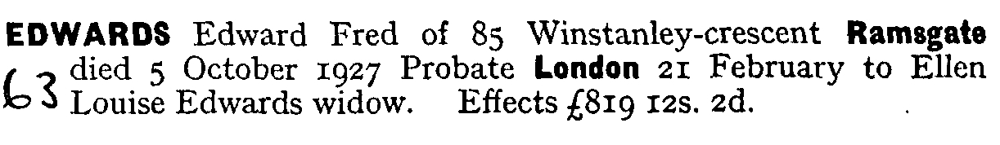
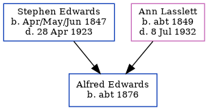

Edward Frederick Edwards cNov 1871 - 1927
[ Home ] | [ Calendar ] | [ Surnames Index ] | [ Census Index ] | [ Family History ]The child of Stephen Edwards (a stationery engine driver) and Ann Lasslett, Edward Edwards, the first cousin three-times-removed on the mother's side of Nigel Horne, was born in St Lawrence, Thanet, Kent, England c. Nov 18711, was baptized there on Dec 10, 1871 and also married Ellen Munday (with whom he had 1 child, Elsie Elizabeth) there at St Lawrence Church on Aug 16, 19023.
During his life, he was living at Whitehall Waterworks, St Lawrence, Thanet, Kent, England on Apr 3, 18818; West Dumpton in Thanet on Apr 5, 18916; at Waterworks Cottage, St Lawrence in Thanet on Mar 31, 19015; at Winstanley Crescent, St Lawrence in Thanet in 1903; and at 85 Winstanley Crescent, St Lawrence in Thanet on Apr 2, 19117 and in 19274.
He died on Oct 5, 1927 in Thanet2.
Parents
- Stephen was born in Apr/may/jun 1847
- Ann Maria was born c. 1849
Children
- Elsie Elizabeth was born on Aug 13, 1903
Citations
- England & Wales births 1837-2006 - Findmypast
- England & Wales deaths 1837-2007 - Findmypast
- England & Wales marriages 1837-2008 - Findmypast
- From his probate record
- 1901 England, Wales & Scotland Census - Findmypast (was age 29 and the son of the head of the household)
- 1891 England, Wales & Scotland Census - Findmypast (was age 19 and the son of the head of the household)
- 1911 Census for England & Wales - Findmypast (was age 39 and the head of the household)
- 1881 England, Wales & Scotland Census - Findmypast (was age 9 and the son of the head of the household)
Media
Edward Edwards - probate

England & Wales deaths 1837-2007 - BMD/D/1927/4/AZ/000218/090
England & Wales marriages 1837-2008 - BMD/M/1902/3/AZ/000114/346
Kent, Canterbury Archdeaconry marriages 1538-1928 - GBPRS/CANT/M/97022419/1
England Marriages 1538-1973 - R_848396710
1911 Census for England & Wales - GBC/1911/RG14/04529/0081/1
Family Tree
Generated by ged2site. Last updated on Jun 11, 2024